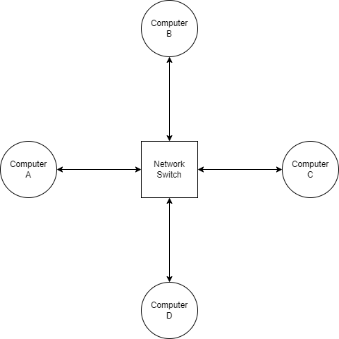
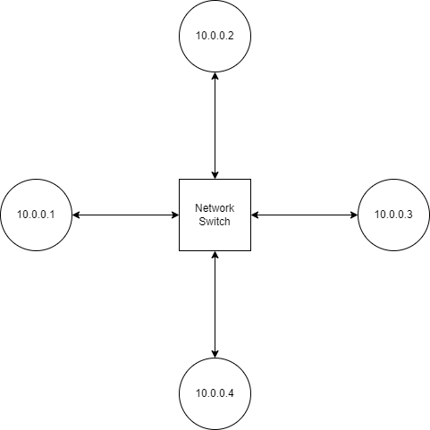
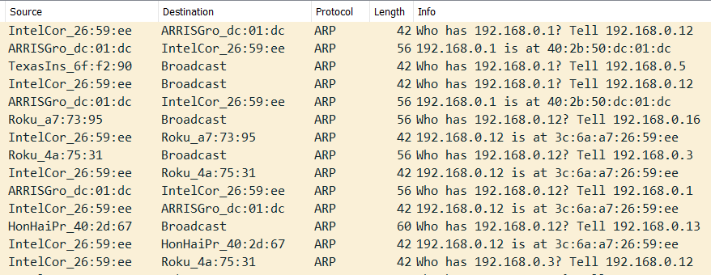

January 4, 2022
Some time ago, it occurred to me that I didn't really understand what made the Internet work. Sure, I am all too familiar with what the user experience is like, and my adventures in web development have forced me to acquire a fair bit of networking knowledge, but between the bits of light there existed vast chasms of confusion. So I decided to do some reading, some soul-searching, and publish my findings in the form of a blog post.
Please note that this post is by no means a comprehensive overview of all the technologies involved in the Internet; I only have one lifetime to waste, unfortunately. However, it does aim to at least touch on all of the most influential systems and organizations that allow the Internet to function. I probably won't cover the Internet's history in very much depth, either, though that is a fascinating topic that you should absolutely look into if you have any interest in networking.
The word "internet" itself offers some hints about its architecture. "Internet" is short for internetworking, the act of connecting multiple computer networks so that they can communicate. That's essentially what the Internet is, a bunch of independently maintained networks that are connected such that any two computers on the Internet can reach each other.
The Internet is powered by an ever-expanding family of technologies and protocols. These systems are segregated into layers, and each layer is responsible for providing an interface that allows the next layer to do its job. This layered model serves as a great way to understand the Internet starting from the ground up. In reality, the divisions between these layers are not as concrete as one would hope, and as a result there is quite a bit of disagreement over how to best model the Internet stack (primarily between supporters of the OSI model and the TCP/IP model). Since this debate is incredibly contentious, I will do my best to avoid it.
Let's start from the very bottom. No Internet, no networks even. Consider two computers: how can digital data be transferred from one to another? The answer to this question is the physical layer, which describes how to transmit ones and zeroes over a physical transmission medium. On top of the physical layer lies the link layer, which leverages the physical layer's capabilities to transfer full frames of data over a network that may be more complicated than a single point-to-point link. (The link layer may also take on other responsibilities such as error correction and retransmission.)
There isn't one idea of a "frame" since their implementation varies widly between protocols. However, for every network, there is a maximum frame size that it can accept, known as the maximum transmission unit or MTU.
The physical layer and link layer are generally tightly coupled (out of necessity), which is the source of endless frustration. For example, the term "Ethernet" might refer to the physical cable standard, but it could also refer to the Ethernet protocol used to transfer frames over those cables.
The full answer is that Ethernet has many sublayers, which reside at varying levels within the physical and link layers. Twisted-pair Ethernet cables themselves are governed by a flock of partially agreeing standards; here's what Wikipedia has to say about it:
Confusion therefore arises because of the naming conventions and performance benchmarks laid down by the International ISO/IEC and American TIA/EIA standards, which in turn are different from the regional European standard, EN 50173-1. In broad terms, the ISO standard for Cat 6A is the most stringent, followed by the European standard, and then the American standard.
That is a mess that I have no interest in delving into. But Ethernet supports much more than just twisted-pair cables; it can be run over other physical media such as coaxial cable or optical fiber. Those standards are managed by IEEE 802.3, which also handles the link-layer details of Ethernet.
Beyond Ethernet, there are no shortage of other ways to physically connect devices. Here are some prolific examples:
For every surviving technology, there are probably around ten dead ones. One example is Token Ring, IBM's Ethernet competitor that was famously vanquished around the turn of the century.
One thing that all IEEE 802 technologies have in common is medium access control (MAC), which enables communication between devices on the same local area network (LAN). Each device (more accurately, each interface) is given a unique 48-bit address. These addresses are allocated by the IEEE to equipment manufacturers, though some mobile devices simply generate a random MAC address when connecting to a network to avoid being tracked.
Devices called network switches allow communication between devices on the same LAN. A switch is basically an embedded device with a large number of Ethernet ports. Because all devices on the network communicate with each other by talking through the switch, a star topology is formed.

In case you can't tell, I'm not exactly the best at making diagrams.
When computer A wants to send a message to computer B, it sends a frame to the switch; the frame header indicates that its destination is computer B's MAC address. However, the switch doesn't know which physical port the connection to computer B is located on, so it relays the frame to all connected computers, hoping that one of them is the intended recipient. When computer B receives the frame, it might reply with another frame. Since each frame has the sender's MAC address as well as the recipient's, when the switch receives a frame from computer B it will associate the port that computer B is connected on with computer B's MAC address, and in the future when the switch receives a frame with computer B as its destination it can simply relay the frame on the correct link instead of flooding.
Back in the day, when everything was slightly worse, networks were often created using hubs instead of switches. Hubs are much simpler devices which simply retransmit everything that it receives to all other devices. Because of their relative lack of sophistication, hubs suffer from a littany of problems:
Today, hubs have been made obsolete in favor of switches and are rarely used outside of special conditions (though evidently my school's IT department hasn't gotten the memo). Even in the early days of Ethernet, it was apparent that collisions posed a challenging problem, so other protocols approached access control differently. For example, in Token Ring setups, there is no central switch or hub; nodes are connected in a ring, and transmission rights are passed around the ring. When one node is done transmitting, it passes the token to the next node. Hence the name, Token Ring. *roll credits*
Switches are one of the most ubiquitous building blocks of computer networks, so it's no surprise that they are all over the place. If your router has more than one Ethernet port, chances are it has a built-in switch.
An overview of physical-layer protocols just wouldn't be complete without a mention to WiFi, standardized by IEEE 802.11. The idea of a point-to-point link starts to break down when it comes to wireless communications because radio signals will propagate to every connected device whether you like it or not. Thus, WiFi networks use an algorithm called Multiple Access with Collision Avoidance to ensure that only one device tries to transmit data at a time. Receiving frames is simpler; devices simply decode all incoming frames and pick out the ones that are actually destined towards their MAC address. In this way, a WiFi network functions more closely to an Ethernet hub than a switch.
In this situation, no router or switch is necessary to relay messages between devices on the same WLAN. In fact, any WiFi-capable transceiver can broadcast a network; in fact, Windows natively supports this feature! Instead, your router plays the role of a wireless access point, aptly abbreviated to WAP. (In light of "WAP" becoming rather vulgar in recent years, I will use the more succinct abbreviation of just AP for the rest of this post.) The role of an AP is simple; it just serves as an interface between the wireless network and the regular wired network, which has access to the public Internet. Speaking of which...
We've finally reached the Internet layer of the Internet. This is where all the action happens! Buckle up, and let's explore how it works.
Relatively few protocols live in the Internet layer. Its primary inhabitants are the Internet Protocol (IP) and Internet Control Message Protocol (ICMP). There are two currently deployed versions of IP, IPv4 and IPv6, which are generally very similar but vary in subtle yet important ways.
In IP, every network interface (usually just one per computer) is associated with an IP address. In IPv4, this address is 32-bits long, and usually written as a series of four numbers (each corresponding to a byte or octet of the IP address) separated by periods. For example, the IP of this blog at the time of writing is 142.93.26.121. IP addresses are managed by the Internet Assigned Numbers Authority, which assigns blocks of IP addresses to the five Regional Internet Registries. The RIRs, in turn, deal with requests from individuals and businesses for IP allocations.
Because IPv4 addresses are only 32 bits long, there can only be 232 = ~4 billion unique IPv4 addresses. That seems like a lot, but as early as the 90s the threat of running out of IPv4 addresses has continually loomed over the Internet, made worse by the fact that many parts of IPv4 space are reserved for various purposes. To fix this issue, IPv6 was created. IPv6 addresses are 128 bits long, which is more than enough to serve humanity's needs at the moments. (If all IPv6 addresses were distributed equally among all living humans, every individual could have 47 octillion addresses. We won't be running out any time soon, especially because sadly a lot of the Internet is still stuck on IPv4.)

xkcd 195: A map of IPv4 space circa 2006. Things have only gotten more crowded since then.
Why can't MAC addresses just be used for routing?, you might ask. The biggest reason is that IP is meant to be mostly agnostic of the protocols used in the underlying link layer. Using MAC addresses would violate that principle; networks not running on IEEE 802 technologies wouldn't be able to join the Internet, which defeats its whole purpose of connecting numerous heterogeneous networks.
One of the key innovations that made the Internet possible was packet switching, the idea of transferring digital data throughout a computer network by splitting it into chunks called packets and allowing nodes which receive packets to decide where to send the packet next so that it can reach the recipient. Thanks to its ubiquity, packet switching probably seems incredibly mundane and obvious to most programmers, but at the time (when the predominant paradigm for telecommunications was circuit switching), packet switching was revolutionary. Compared to circuit switching, packet switching allows for much more diverse network topologies, and does not require all the packets in a single data stream to travel to the recipient via the same route, making Internet routing incredibly dynamic. All of these attributes have helped the Internet scale to billions of connected devices.
An IPv4 packet consists of two parts: a header, which provides information about the packet itself, and the data contained within the packet. Some of the info contained within the header includes:
So how exactly do IP packets find their way to their final destination? That's a big question. Let's figure it out.
Before concerning ourselves with the public Internet in all of its grandeur, let's consider how IP works on a single local network first. Let's check up on our little four-computer network from earlier.

Assume that each computer has been assigned a static IP address.
Suppose computer 10.0.0.2 wants to send a message to 10.0.0.3. In order to actually deliver a message to 10.0.0.3, our sender needs to know which MAC address to send packets to. It can obtain this information via the Address Resolution Protocol (ARP).
ARP is a protocol that enables the resolution of IP addresses to MAC addresses on a network. It operates on the link-layer. When a computer needs to determine the MAC address given an IP address, it broadcasts an ARP request to the local network. This is done by sending frames to a MAC address of FF:FF:FF:FF:FF:FF, which signals to the switch that the message should be relayed to all connected devices. The device which has the corresponding IP responds to the request with its MAC and IP address. Both of these devices may cache each others' IP and MAC addresses to avoid needing to make another ARP request in the future.
There also exists a second method for the discovery of IP-to-MAC mappings. Under certain circumstances, such as when a device joins a network or obtains a new IP address, it may publish an ARP announcement that prompts all other devices to update their ARP caches.
One major weakness of ARP is its vulnerability to spoofing attacks, wherein a malicious device publishes an ARP announcement or responds to an ARP request not intended for them in order to masquerade as another device. For this reason, IPv6 uses Neighbor Discovery Protocol (NDP) instead of ARP. NDP seeks to address some of the security and usability problems which have traditionally affected ARP. To learn more, check out this thread on StackExchange.
ARP is ubiquitous among IEEE 802 networks. If your computer is on a WiFi or Ethernet-based network, you can install Wireshark and observe ARP requests happening right before your eyes.

Some ARP requests seen on my local network.
Your computer doesn't make an ARP request for every single outgoing IPv4 connection. If configured correctly, your computer should be able to tell which addresses belong to the local network (i.e. they can be reached by MAC address) and which reside on the public internet.
During the Internet's infancy, the format of IP addresses was much simpler. As seen in RFC 760, published in January 1980, the first 8 bits of each IP address identified which network it originated from, and the remaining 24 bits were unique to each host. This limited the Internet to just 256 networks (technically 254 since addresses beginning with 0 are reserved for local use and addresses beginning with 255 are used for broadcast). It soon become apparent that the Internet would grow to encompass much more than just 256 networks, so the classful network scheme was adopted.
Under classful networking, each network belongs to one of three classes:
(The actual scheme was slightly more complex.)
Eventually, engineers realized that the classful networking scheme was still rather inefficient; the size difference between classes was far too granular, and many IP addresses were going to waste. So classful networks were done away with, and a new system, Classless Inter-Domain Routing (CIDR), was adopted.
Under CIDR, the number of network/host bits is variable, instead of being fixed at 8, 16, or 24. This allowed IPs to be allocated with much less overhead. In CIRD notation, the length of the network prefix is written after the IP and separated with a slash. For example, the IP of this server at the time of writing is 142.93.26.121. It belongs to a bigger subnet, 142.93.16.0/20, which encompasses all IP addresses whose first 20 bits match those of 142.93.16.0. The length of this network's prefix is 20 bits, giving it a maximum capacity of 212 = 4096 hosts.
Complementary to CIDR is the idea of a netmask. For a given classless network, its netmask is a special 32-bit value where all the prefix bits are set to 1 while all the host bits are cleared. The routing prefix of an address can be obtained by finding the bitwise AND of an address and the netmask. If the routing prefix of an address doesn't match that of the local network, your computer won't perform an ARP lookup, since only machines on the same LAN can be contacted via MAC address.
Check out my CIDR calculator, which performs a number of useful operations given a CIDR range.
So what happens when your computer encounters an IP that isn't on the LAN? Thankfully for your poor computer, handling the routing of this packet across the public Internet is mostly outside of its responsibilities. Your computer has a default route, which specifies who to contact to relay packets outside the local network. That device is called the default gateway, since it serves as a gateway to the rest of the world.
Your computer uses the default gateway's IP (which can be printed via undefined on Windows or undefined on Linux) to figure out its MAC address. However, the IP packets sent to the default gateway still have the final recipient's IP address, since obviously the default gateway needs to know who to send it to.
Many residential routers also serve a management page from the default gateway IP address. This is purely by convention. The router can distinguish traffic to the gateway itself and traffic to the public internet by looking at the destination address of incoming packets.
© 2022 Adrian Zhang • about me • contribute